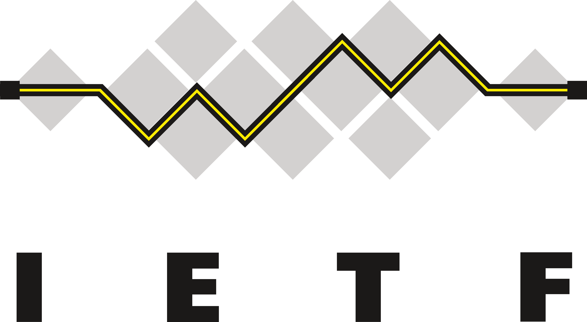
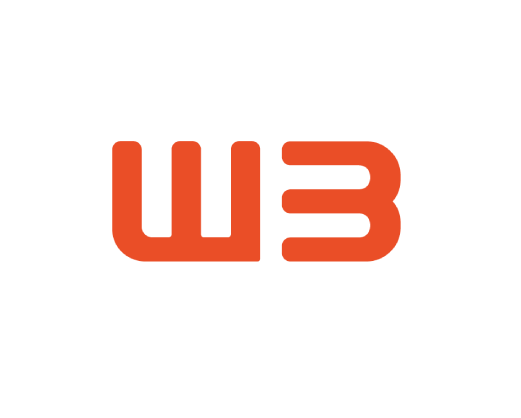

The IETF is an open international community of network designers, operators, vendors, and researchers
concerned with the evolution and development of the Internet architecture and the smooth operation of the
Internet. The technical work of the IETF is done in Working Groups, which are organized by topic into several
Areas. Much of the work is handled via mailing lists. The IETF holds meetings three times per year.
The IETF working groups are grouped into areas, and managed by Area Directors, or ADs. The ADs are members of
the Internet Engineering Steering Group (IESG). Providing architectural oversight is the Internet
Architecture Board, (IAB). The IAB also adjudicates appeals when someone complains that the IESG has failed.
The IAB and IESG are chartered by the Internet Society (ISOC) for these purposes. The General Area Director
also serves as the chair of the IESG and of the IETF, and is an ex-officio member of the IAB. The Internet
Assigned Numbers Authority (IANA) is the central coordinator for the assignment of unique parameter values for Internet protocols.

concerned with the evolution and development of the Internet architecture and the smooth operation of the
Internet. The technical work of the IETF is done in Working Groups, which are organized by topic into several
Areas. Much of the work is handled via mailing lists. The IETF holds meetings three times per year.
The IETF working groups are grouped into areas, and managed by Area Directors, or ADs. The ADs are members of
the Internet Engineering Steering Group (IESG). Providing architectural oversight is the Internet
Architecture Board, (IAB). The IAB also adjudicates appeals when someone complains that the IESG has failed.
The IAB and IESG are chartered by the Internet Society (ISOC) for these purposes. The General Area Director
also serves as the chair of the IESG and of the IETF, and is an ex-officio member of the IAB. The Internet
Assigned Numbers Authority (IANA) is the central coordinator for the assignment of unique parameter values for Internet protocols.
Mission and principles
The mission of the IETF is to make the Internet work better by producing high quality, relevant technical documents that influence the way people design, use, and manage the Internet. The IETF pursues this mission in adherence to the following cardinal principles [see RFC3935]: Open process Any interested person can participate in the work, know what is being decided, and make his or her voice heard on the issue. Part of this principle is our commitment to making our documents, our WG mailing lists, our attendance lists, and our meeting minutes publicly available on the Internet. Technical competence The issues on which the IETF produces its documents are issues where the IETF has the competence needed to speak to them, and that the IETF is willing to listen to technically competent input from any source. Technical competence also means that we expect IETF output to be designed to sound network engineering principles - this is also often referred to as "engineering quality". Volunteer Core Our participants and our leadership are people who come to the IETF because they want to do work that furthers the IETF's mission of "making the Internet work better." Rough consensus and running code We make standards based on the combined engineering judgement of our participants and our real-world experience in implementing and deploying our specifications. Protocol ownership When the IETF takes ownership of a protocol or function, it accepts the responsibility for all aspects of the protocol, even though some aspects may rarely or never be seen on the Internet. Conversely, when the IETF is not responsible for a protocol or function, it does not attempt to exert control over it, even though it may at times touch or affect the Internet.ICANN
The global Internet community working together to promote the stability and integrity of the InternetWhat is ICANN?
The Internet Corporation for Assigned Names and Numbers (ICANN) is an internationally organized, non-profit corporation that has responsibility for Internet Protocol (IP) address space allocation, protocol identifier assignment, generic (gTLD) and country code (ccTLD) Top-Level Domain name system management, and root server system management functions. These services were originally performed under U.S. Government contract by the Internet Assigned Numbers Authority (IANA) and other entities. ICANN now performs the IANA function. As a private-public partnership, ICANN is dedicated to preserving the operational stability of the Internet; to promoting competition; to achieving broad representation of global Internet communities; and to developing policy appropriate to its mission through bottom-up, consensus-based processes.What is ICANN's Role?
ICANN is responsible for coordinating the management of the technical elements of the DNS to ensure universal resolvability so that all users of the Internet can find all valid addresses. It does this by overseeing the distribution of unique technical identifiers used in the Internet's operations, and delegation of Top-Level Domain names (such as .com, .info, etc.). Other issues of concern to Internet users, such as the rules for financial transactions, Internet content control, unsolicited commercial email (spam), and data protection are outside the range of ICANN's mission of technical coordination.How does ICANN work?
Within ICANN's structure, governments and international treaty organizations work in partnership with businesses, organizations, and skilled individuals involved in building and sustaining the global Internet. Innovation and continuing growth of the Internet bring forth new challenges for maintaining stability. Working collectively, ICANN's participants address those issues that directly concern ICANN's mission of technical coordination. Consistent with the principle of maximum self-regulation in the high-tech economy, ICANN is perhaps the foremost example of collaboration by the various constituents of the Internet community. ICANN is governed by an internationally diverse Board of Directors overseeing the policy development process. ICANN's President directs an international staff, working from three continents, who ensure that ICANN meets its operational commitment to the Internet community. Designed to respond to the demands of rapidly changing technologies and economies, the flexible, readily implemented policy development process originates in the three Supporting Organizations. Advisory Committees from individual user organizations, and technical communities work with the Supporting Organizations to create appropriate and effective policies. Over eighty governments closely advise the Board of Directors via the Governmental Advisory Committee.ICANN's Accomplishments
Among ICANN's recent accomplishments:
ICANN established market competition for generic domain name (gTLD) registrations resulting in a lowering of domain name costs by 80% and saving consumers and businesses over US$1 billion annually in domain registration fees. ICANN implemented a Uniform Domain Name Dispute Resolution Policy (UDRP), which has been used to resolve more than 5000 disputes over the rights to domain names. The UDRP is designed to be efficient and cost effective. Working in coordination with the appropriate technical communities and stakeholders, ICANN adopted guidelines for the deployment of Internationalized Domain Names (IDN), opening the way for registration of domains in hundreds of the world's languages. plays a unique role in the infrastructure of the internet. Through its contracts with registries (such asdot-com or dot-info) and registrars (companies that sell domain names to individuals and organisations),
we help define how the domain name system functions and expands.

W3C or World Wide Web Consortium is led by Tim Berners-Lee, inventor of the World Wide Web and Director and Dr.
Jeffrey Jaffe, W3C CEO. They are supported by a staff of technical experts who help coordinate technology
development and manage the operations of the Consortium.

To ensure that W3C continues to produce standards that meet the needs of the global community, W3C must: Broaden participation to include more stake-holders from around the World;
Increase the diversity of organizations that participate actively,
including industry, research, implementers, and user communities;
Develop international education and outreach programs and raise awareness of W3C’s role;
Understand and satisfy the linguistic and cultural requirements of many different communities and gain a better understanding of the technological problems deriving from linguistic and structural differences. The Offices play a key role in helping W3C reach these goals.
Jeffrey Jaffe, W3C CEO. They are supported by a staff of technical experts who help coordinate technology
development and manage the operations of the Consortium.
Background
W3C plays an increasingly important role in developing core Web standards.To ensure that W3C continues to produce standards that meet the needs of the global community, W3C must: Broaden participation to include more stake-holders from around the World;
Increase the diversity of organizations that participate actively,
including industry, research, implementers, and user communities;
Develop international education and outreach programs and raise awareness of W3C’s role;
Understand and satisfy the linguistic and cultural requirements of many different communities and gain a better understanding of the technological problems deriving from linguistic and structural differences. The Offices play a key role in helping W3C reach these goals.